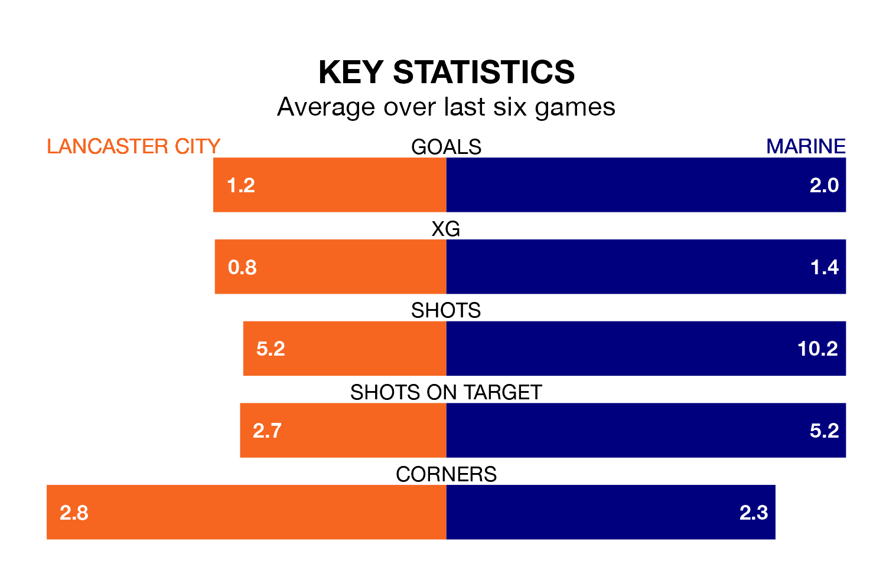

Marine are strong favourites to take all three points despite Lancaster City's home advantage in Saturday's match at Giant Axe.
*Betting Company* are offering odds of 1.94 on Marine sealing the win, with the visitors sitting fourth in the Northern Premier League table.
Lancaster, who are 10th in the league and nine points behind Marine, are priced at 3.14 to win. A draw is set at 3.67.
With 72 goals in 34 games so far this season, Marine are the league's second-highest scorers with 2.1 goals per game. And they are conceding fewer than average, letting in 41 goals at a rate of 1.2 per game.
Lancaster, meanwhile, are below average scorers, with 1.4 goals per game, compared to a league average of 1.6. They have also conceded 1.4 goals per game.
In the last 10 years, Lancaster and Marine have played each other on eight occasions. Lancaster won two of them, Marine five, and they drew once.
On average, Lancaster scored 1.0 goal and Marine 1.5 in those matches.
Their last meeting was on October 21, when Marine won 2-1 at home.
City are in mixed form in the Northern Premier League, with two wins and two draws from their last six games.
With three wins and a draw over that period, the away team's form is slightly better – they have taken 10 points from 18, compared to the hosts' eight.
Lancaster's last match was on March 16, a 2-0 loss against Morpeth Town.
Marine beat Guiseley 1-0 last time out, also on March 16.
Updated: 10:19 (UTC), 22/03/24